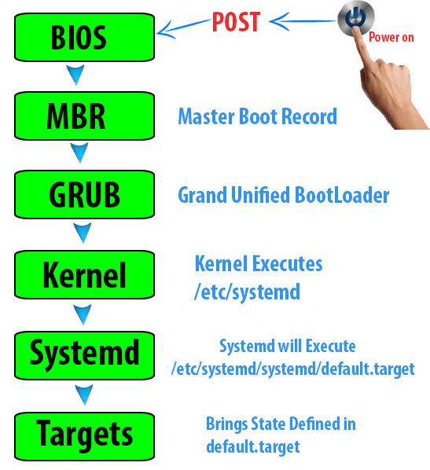

Arch Linux
A good Tutorial for Installing it!
1. What is Verify Signature
Signature is used for protecting data from undetected changes by including a proof of identify value called a digital signature.
2. What is Kernel Module
Kernel module are pieces of code that can be loaded and unloaded into the kernel upon demand. They extend the functionality of the kernel without the need of reboot the system.
Modules are stored in /usr/lib/modules/kernel_release or /lib/modules. You
can use the command uname -r to get your current kernel release version.
2.1. Nouveau
Nouveau is an open-source Nouveau driver for NVIDIA graphics cards.
3. initramfs
The root file system at / starts out as an empty rootfs, which is a special
instance of ramfs or tmpfs. The purpose of the initramfs is to bootstrap the
system to the point where it can access the root file system. It does not need
to contain every module one would ever want to use; it should only have modules
required for the root device like IDE, SCCI, SATA or USB/FW. The majority of
modules will be loaded later on by udev, during the init process.
4. What is fstab
fstab is the Linux system’s file system table. It is a configuration table
designed to ease the burden of mounting and unmounting file systems to a
machine. It is a set of rules used to control how different file systems are
treated each time they are introduced to a system.
5. What is grub
grub is a boot loader. It is the software that loads the Linux kernel (It has
other uses as well). It is the first software that starts at a system boot.
The BIOS checks the Master Boot Record (MBR) which is a 512 byte section located first on the Hard Drive. It looks for a bootloader (like GRUB).
Then you will be prompted by the GRUB menu which can contain a list of the operating systems installed (in the case of dual boot), or perhaps different kernels installed in a Linux distro.
When you choose which distro or kernel you want to use, GRUB loads the selected
kernel. The kernel starts init or systemd, which is the first process to
start in Linux. init then starts other processes like network services and
other that you might have configured at boot time.
6. Firmware Types
The firmware is the very first program that is executed once the system is switched on. The words BIOS or (U)EFI are often used instead of firmware.
7. What is UEFI
7.1. BIOS
- BIOS (basic input/output system) is a program.
- It is in the ROM (read only) disk. It is hard encoded on the computer motherboard.
- It is used by a computer’s microprocessor to start the computer system after it is powered on. It performs hardware initialization during the booting process (power-on startup).
- It also manages data flow between the computer’s operating system (OS) and attached devices, such as the hard disk, video adapter, keyboard, mouse and printer.
7.2. UEFI
BIOS’s popularity has waned in favor of a newer technology: UEFI (Unified Extensible Firmware Interface). Intel announced a plan in 2017 to retire support for legacy BIOS systems by 2020, replacing them with UEFI.
UEFI does not launch any boot code from the Master Boot Record (MBR) whether it exists or not, instead booting relies on boot entries in NVRAM.
7.2.1. The Usage of UEFI
UEFI launches EFI (Extensible Firmware Interface) applications, e.g., boot
loaders, boot managers, UEFI shell, etc. These applications are usually stored
as files in the EFI system partition. Each vendor can stores its files in the
EFI system partition under the /EFI/vendor_name directory. The applications
can be launched by adding a boot entry to the NVRAM (non-volatile random access
memory, an RAM can keep the data with power off) or from the UEFI shell.
8. System Initialization
8.1. Under BIOS

- System switched on, the POST (power-on self-test) is executed.
- After POST, BIOS initializes the hardware required for booting (disk, keyboard controller etc.).
- BIOS launches the first 440 bytes (the Master Boot Record bootstrap code area) of the first disk in the BIOS disk order.
- The boot loader’s first stage in the MBR (Master Boot Record) boot code then
launches its second stage code (if any) from either:
- next disk sectors after the MBR, i.e., the so called post-MBR gap (only on a MBR partition table).
- A partition’s or a partitionless disk’s volume boot record (VBR)
- The BIOS boot partition (GRUB on BIOS/GPT only).
- The actual boot loader is launched.
- The boot loader then loads an operating system by either chain-loading or directly loading the operating system kernel
POST: A power-on self-test is a set of routines performed by firmware or software immediately after a computer is powered on, to determine if the hardware is working as expected. The process would proceed further only if the required hardware is working correctly, else the BIOS would issue an error message. POST sequence is executed irrespective of the Operating System and is handled by the system BIOS. Once the tests are passed the POST would generally notify the OS with beeps while the number of beeps can vary from system to system. When POST is successfully finalized bootstrapping is enable. Bootstrapping starts the initialization of the OS.
8.2. Under UEFI
- System switched on, the power-on self-test (POST) is executed.
- After POST, UEFI initializes the hardware required for booting (disk, keyboard controllers etc.).
- Firmware reads the boot entries in the NVRAM to determine which EFI
application to launch and from where (e.g. from which disk and partition).
- A boot entry could simply be a disk. In this case the firmware looks fro an
EFI system partition on that disk and tries to find an EFI application in
the fallback boot path
\EFI\BOOT\BOOTx64.EFI(bootia32.EFIon systems with a IA32 (32-bit) UEFI). This is how UEFI bootable removable media work.
- A boot entry could simply be a disk. In this case the firmware looks fro an
EFI system partition on that disk and tries to find an EFI application in
the fallback boot path
- Firmware launches the EFI application.
- This could be a boot loader or the Arch kernel itself using EFISTUB.
- It could be some other EFI application such as UEFI shell or a boot manages like systemd-boot or rEFInd.
If Secure Boot is enabled, the boot process will verify authenticity of the EFI binary by signature.
9. Dual Boot with Windows
9.1. Windows Before Linux
The main difference between installing individual Linux and dual system is the boot loader, which load the operating system.
9.1.1. BIOS Systems
9.1.1.1. Using a Linux Boot Loader
You may use any multi-boot supporting BIOS boot loader, such as ‘grub’.
9.1.1.2. Using Windows Boot Loader
- Install a Linux bootloader on a partition instead of the MBR, e.g., the
/bootpartition - Copy this bootloader to a partition readable by the windows bootloader
- Use Windows bootloader to start said copy of the Linux bootloader
10. Configuration
10.1. Thunderbird
Thunderbird is used as the email app. However, it can not be stored on the tray.
birdtray can help. Install it with yay -S birdtray and run birdtray then
Configure it with thunderbird.
10.2. Remote Desktop
To use the local camera, this command is needed.
1 | sudo xfreerdp /f /u:Account Name /p:Password /v:IP:Port /video /usb:id,dev:1bcf:28b |
The usb id is obtained by command lsusb.
Something also need to be set on the Windows side.
- Type
WinKey + Rand rungpedit.mscon the target VM (the target windows 10 Virtual Machine) to start theGroup Policy Editor. - Locate the item
Computer Configuration \ Administrative Templates \ Windows Components \ Remote Desktop Services \ Remote Desktop Session Host \ Device and Resource Redirection\ Do not allow supported Plug and Play device redirectionand set this item to Disabled. - Also you can set
1 | Remote Desktop Connection Client \ RemoteFX USB Device Redirection \ Allow RDP redirection of other supported RemoteFX USB devices from this computer (Enabled) |
- Run
gpupdate /forcefrom an elevated command prompt. - At least disconnect RDP session and connect again, if this does not work reboot target VM.
10.3. Touch Pad
When dwm is started, tapping the touchpad does not work. To let it work create
/etc/X11/xorg.conf.d/30-touchpad.conf, which contains
1 | Section "InputClass" |
Notice that there is no indents in the file, otherwise it will not work.
10.4. Network
Connect a network with NetworkManager. For example,
nmcli connection add type wifi con-name BUPT-mobile ifname wlan0 ssid BUPT-mobile -- wifi-sec.key-mgmt wpa-eap 802-1x.eap ttls 802-1x.phase2-auth mschapv2 802-1x.identity USERNAME
Then BUPT-mobile can be connected with nmcli --ask connection up BUPT-mobile
or nmtui. The nmtui does not support add network of WPA2 802.1X otherwise
one can add and connect the network by only nmtui.
Use space to enable or disable automatically connect in nmtui. X denotes
enable.
10.5. startx
10.5.1. NVIDIA
startx provides a command line startup of Linux. However, it will cause a
black screen problem with NVIDIA. To avoid it, add
1 | xrandr --setprovideroutputsource modesetting NVIDIA-0 |
to the .xinitrc.
10.5.2. Auto Start
Add the following snippets to ~/.bash_profile.
1 | if [ -z "${DISPLAY}" ] && [ "${XDG_VTNR}" -eq 1 ]; then |
10.6. Screen Translator
10.6.1. youdao
youdao can be installed by yay -S youdao-dict. However, it is very slow to
show the result when words are picked. This is because of the vpn. I use
51game. However, when I set the system client into mainland white list, it
translate fast for picking words.
10.7. Goldendict
Goldendict is a more power translator. Install translate-shell. edit >
dictionaries > programs > add, type: Plain text; Command Line:
trans -e google -s en -t zh -show-original y -show-original-phonetics n -show-translation y -no-ansi -show-translation-phonetics n -show-prompt-message n -show-languages n -show-original-dictionary n -show-dictionary n -show-alternatives n "%GDWORD%"
Set popup only press alt. Use ctrl will cause a problem that translate
when copy. Especially when copy a web link.
To enable run goldendict in background, pick Enable system try icon and
Start to system try. Otherwise, the gui of goldendict will open even if it
is executed by goldendict &.
10.8. Tmux
When install tmux, some error maybe occur.
/usr/share/fish/functions/fish_prompt.fish (line 6): hostname|cut -d . -f 1
can be solved by pacman -S inetutils.
shell command \tmux`throws`can’t use /dev/tty` errorcan be solved byexec
</dev/tty; exec <&1; TMUX= tmux`.
10.9. Clipboard of nvim
To enable the clipboard of nvim share by the system, run sudo pacman -S xsel
10.10. Try to run exe files
10.10.1. Wine
I successfully installed wechat with wine. However, it can not use the camera.
10.10.2. Bottles
10.10.2.1. PyGObject
Bottles depends on PyGObject, it is a python package. However, it is difficult
to install it by pip. It can be easily installed by conda.
10.10.2.1.1. A way to install PyGObject
pip install PyGObject default to install its dependences like pycairo.
However, the latest version of pycairo can not be successfully ran on my
system. Thus I can install pycairo manually by pip or conda and run
pip install --no-build-isolation pygobject to install pygobject and in this
way pygobject will not install its dependences automatically and will find the
dependences locally.
10.10.2.1.2. Install successfully
bottles is installed successfully by using flatpak, by
sudo pacman -S flatpak. However, it also can not use the camera.
11. Locale
For detail to see the Arch Linux wiki. Notice that the KDE can set the language too. Only set to en_US.